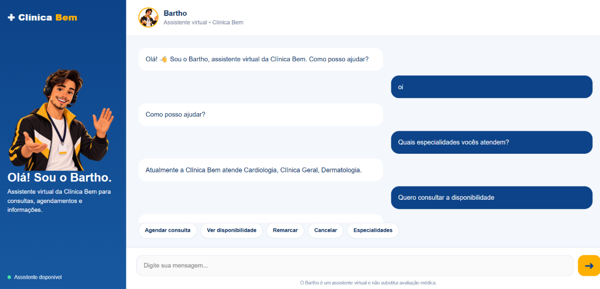

⌕
Entender o pedido
Interpretar o que a pessoa precisa mesmo quando ela não fornece todos os dados de uma só vez.
PRODUTO DIGITAL · IA APLICADA
Bartho é um protótipo de assistente virtual para a Clínica Bem, criado para transformar pedidos em linguagem natural em jornadas de atendimento mais claras e consistentes.
Conheça o projeto ↓Um case sobre produto, experiência e os desafios de levar IA para um fluxo real.
VISÃO DO PROJETO
O Bartho explora como um assistente virtual pode orientar pacientes em tarefas administrativas da clínica, mantendo o contexto da conversa e respeitando os limites das informações e ações disponíveis.
02 / CONTEXTO E PROBLEMA
Solicitações chegam de formas diferentes: podem estar incompletas, surgir em várias mensagens ou depender de informações que ainda precisam ser esclarecidas. Isso exige mais do que gerar uma resposta bem escrita.
Interpretar o que a pessoa precisa mesmo quando ela não fornece todos os dados de uma só vez.
Conectar informações distribuídas ao longo da conversa sem perder o que já foi informado.
Distinguir uma resposta enviada de uma tarefa realmente concluída, sem prometer o que não foi confirmado.
Uma resposta convincente não garante que a necessidade do paciente foi atendida corretamente.
03 / PROPOSTA DE SOLUÇÃO
O Bartho combina interpretação de linguagem natural, contexto da conversa e regras implementadas no backend para conduzir o usuário ao próximo passo possível.
EntenderIdentificar a intenção e os dados que já foram fornecidos.
ConduzirPerguntar o que falta e seguir o fluxo adequado.
ResolverResponder ou acionar uma funcionalidade disponível, respeitando suas regras.
Visão conceitual do fluxo — a execução depende da implementação e dos dados disponíveis.
04 / ESCOPO FUNCIONAL
O MVP foi construído em torno de jornadas administrativas e informações que ajudam o paciente a avançar no atendimento.
Apoio a dúvidas administrativas e informações disponíveis na base utilizada pelo assistente.
INFORMAÇÃOFluxos para consultar disponibilidade, sujeitos aos dados e às integrações existentes.
CONSULTAColeta progressiva dos dados necessários para conduzir uma solicitação de agendamento.
JORNADATratamento de intenções de alteração de consulta dentro dos fluxos implementados.
GESTÃO DE CONSULTAImportante: as funcionalidades representam o escopo explorado no protótipo. A disponibilidade real de cada ação depende da integração, dos dados e das regras configuradas.
05 / EXPERIÊNCIA DO PRODUTO
A captura abaixo documenta a interface de conversa do Bartho. Nesta página, ela é apresentada como imagem estática para mostrar a experiência visual do protótipo — não existe chat ativo conectado ao modelo.
✓ Interface de conversa como ponto de contato
✓ Personagem e identidade visual reconhecíveis
✓ Demonstração fiel ao material do projeto

06 / ARQUITETURA E TECNOLOGIA
O protótipo separa interpretação, lógica de aplicação e persistência. A confiabilidade depende da forma como esses componentes se conectam.
Modelo de linguagem executado localmente no ambiente de desenvolvimento para interpretar mensagens.
Backend responsável por receber solicitações, coordenar os fluxos e aplicar as regras implementadas.
Banco utilizado pelo protótipo para armazenar os dados previstos na implementação.
Camada visual para apresentar a experiência de conversa e enviar mensagens à API.
Diagrama conceitual baseado na arquitetura descrita no case. Ele não implica que todas as integrações estejam atualmente publicadas ou operacionais.
07 / DESAFIOS E DECISÕES
O desenvolvimento revelou desafios de integração e confiabilidade que não podem ser resolvidos apenas com um modelo mais capaz.
Garantir que interface, API, modelo e banco troquem informações de forma consistente.
Testar diferentes formas de pedir a mesma coisa e ajustar instruções, validações e regras.
Tratar dados ausentes e disponibilidade sem afirmar que uma ação ocorreu quando ela não foi confirmada.
Testar a jornada completa, e não apenas chamadas isoladas, para encontrar inconsistências entre interface e API.
Priorizar regras explícitas e validação do fluxo em vez de confiar somente na resposta gerada pelo modelo.
08 / VALIDAÇÃO EXPLORATÓRIA
Na rodada exploratória registrada no portfólio, 17 de 20 participantes concluíram a jornada sem intervenção humana.
Esse resultado descreve uma rodada exploratória do MVP. Não é uma taxa de desempenho em produção e não deve ser generalizado para todos os cenários.
resolução autônoma observada
na rodada exploratória
Disponibilidade, agendamento, remarcação, cancelamento, informações administrativas, contexto, recuperação de informações e situações fora do escopo.
PRÓXIMAS MÉTRICAS
09 / EVOLUÇÃO E APRENDIZADOS
O desenvolvimento do Bartho aconteceu em ciclos de construção, expansão dos fluxos, testes e correções. Cada etapa trouxe novas perguntas sobre consistência e confiabilidade.
Estruturar interface, backend, modelo local e banco de dados para as primeiras jornadas.
Ampliar as solicitações atendidas e detalhar as regras para diferentes cenários.
Investigar interpretações incorretas e ajustar fluxos e validações a partir dos problemas encontrados.
Repetir cenários equivalentes de ponta a ponta, corrigir inconsistências e medir os resultados com critérios claros.
IA útil não é só a que conversa bem.
É a que ajuda a concluir a tarefa certa, com consistência.